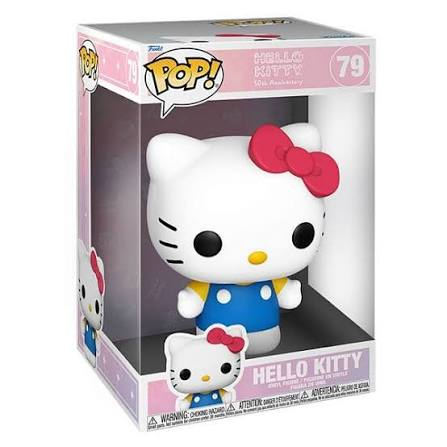
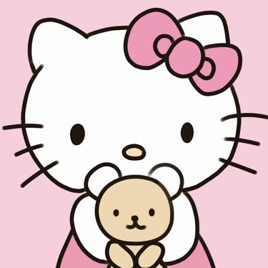
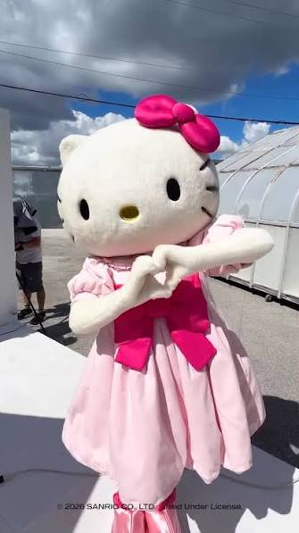
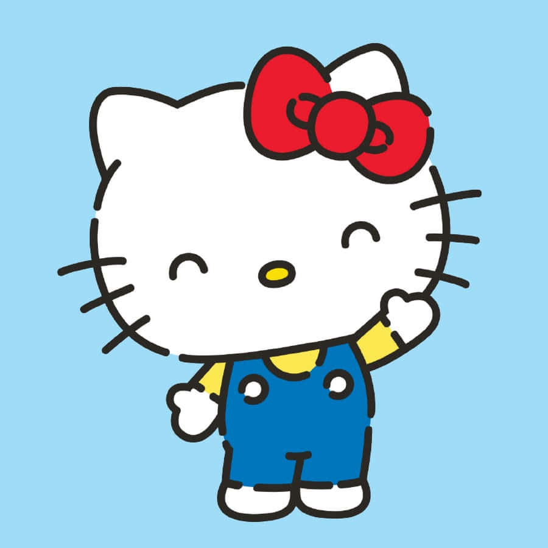

A Hello Kitty é uma personagem muito conhecida e querida em todo o mundo. Ela se destaca por seu visual fofo, com seu famoso laço e seu estilo delicado. Ao longo dos anos, a personagem apareceu em diversos produtos, desenhos, brinquedos e outros itens, conquistando fãs de várias idades
Além de aparecer em desenhos e histórias, a Hello Kitty também está presente em brinquedos, roupas, materiais escolares e diversos outros produtos. Sua personalidade fofa e seu visual característico fazem dela um dos maiores símbolos da cultura kawaii.



